Work

Chief of Staff · March 2026 – October 2026
Rok Curkovic, known mononymously as Rok, is a Canadian record producer from Toronto, Ontario.
Head of Operations · January 2025 – October 2026
Warrlock is a talent-management company co-founded in 2024 by American A&R Will Cramer and Canadian record producer Rok.
- Grew sneak’s streams 397% from 637K to 3.2M, listeners 447% from 52K to 283K, saves 425% from 32K to 168K, and playlist adds 309% from 66K to 270K in one year
- Positioned sneak for his 2025 signing to 10K Projects and earned him coverage in The FADER and from Twitch streamers BruceDropEmOff and PlaqueBoyMax
- Grew Roxie’s streams 837% from 50K to 472K, listeners 720% from 6.3K to 52K, saves 993% from 3.6K to 39K, and playlist adds 1,351% from 3.1K to 45K in 12 months
- Landed 2 of Roxie's songs on Spotify's editorial hyperpop playlist
- Selected the release slate for sneak, set the format of each drop from single to EP to project, and directed every rollout
- Shipped 4 projects, 3 EPs, and 23 singles to every major DSP, plus 10 music videos that drew 177K YouTube views, manually uploading every video and independent release
- Packaged independent and label releases with final mixes, cover art, metadata, credits, time-synced lyrics, pre-save pages, and smart links
- Served as the primary point of contact for both artist teams and oversaw day-to-day operations
- Led full rebrands for both artists, securing artist verification on 5 major platforms and maintaining a cohesive, accurate presence across streaming, social, and lyric sites
- Partnered with the marketing lead on paid campaigns across Instagram, X, TikTok, and YouTube, selecting placements, developing post concepts, and tracking engagement
- Ran sneak's social accounts and content strategy across all channels and collaborated closely with Roxie on his
- Mixed 40 songs for sneak, tailoring vocal chains, manually tuning vocals, restructuring songs and beat arrangements as needed, and layering effects to polish each track
- Designed and produced promotional assets including tracklist artwork, memes, trailers, and music videos
- Planned and led multi-day trips in Toronto and London for recording sessions and music video shoots, handling logistics, scheduling, and location scouting while directing and shooting photo and video on site
Head of Operations · February 2022 – June 2026
SOUFSIDE is a record label founded in 2022 by American record producer Richie Souf.
- Closed 23 song clearances for 3 represented producers with artists including Money Man, Lil Gotit, and Jay Critch, collecting $15K+ in fees from Island Records, EMPIRE, and other labels
- Negotiated splits and advances when terms fell short and signed off on agreements on each producer’s behalf
- Carried each clearance through to payout, handling sample and session forms, invoicing with W-9 or W-8BEN tax forms, and onboarding producers onto label payment portals
- Served as primary point of contact for all 3 producers, managing their requests and external communication

Release Manager · October 2021 – October 2025
Bryan Trillos, professionally known as Redda, is an American recording artist, record producer, and model from Miami, Florida.
- Shipped 8 projects and 22 singles to all major DSPs, plus 15 music videos that drew 1.9M+ YouTube views, manually uploading all videos and releases
- Packaged releases with final mixes, cover art, metadata, credits, and smart links
- Reinstated 3 of Redda’s albums removed by false copyright claims, resolving each dispute with the distributor’s support team on his behalf
- Partnered with Redda on song selection and tracklist order for select projects
Chief of Staff · June 2021 – June 2026
Tony T. Son, professionally known as Richie Souf, is an American record producer and label owner from Atlanta, Georgia.
- Maintained his Genius profile, including the full biography and credit accuracy
- Provided artist and producer recommendations for collaboration
- Served as sole Discord administrator, building and maintaining server structure and moderation systems while handling community management
- Led product and apparel design across two separate brand ventures, producing mockups, tech packs, advertisements, and websites
- Handled a wide range of personal and professional requests, including communications, document preparation, media sourcing and delivery, and custom hardware design
Co-Founder · February 2020 – February 2026
Saint Martins is a multidisciplinary company co-founded in 2020 by Hamed Tahiri and Hewad Tahiri.
- Closed song clearances end to end for represented producers, from term negotiation through contract drafting, review, invoicing, and tax documentation, collecting the fees generated across the roster
- Pursued and secured publishing deals, including administration and co-publishing agreements, to support royalty collection
- Submitted credit and release details to publishers for every release
- Served as manager to represented producers, overseeing their day-to-day operations, requests, inquiries, and external communications
- Established and maintained Genius profiles, writing bios, verifying accounts, and correcting miscredited or missing production credits across the roster's catalog
- Pitched content and post ideas to social media pages to generate coverage
- Onboarded producers onto payment portals and administrative systems required by record labels
- Photographed producers for press and promotional use, with work appearing in editorial content from music media outlets and publications
Projects

Product Designer · June 2026
Rebuilt a cross-platform dashboard originally created by a fan engagement manager at a major record label.
- Consolidated multiple panels into a single Fan Network Reach table, showing platform totals, month-over-month change, and inline share bars with adaptive percentage precision for low-share platforms
- Corrected the Fan Network Growth data model, starting each platform's line at launch rather than running flat at zero, and rescaling axis ticks to fit only the visible data
- Rebuilt the Fan Page Tracker, adding sortable columns, natural alphanumeric sorting, filters for platform and starred items, a sticky header, and a custom scrollbar with drag-to-scroll
- Rebuilt the Growth Velocity panel to read from full history, adding a positive-month ratio and a custom tooltip
- Split the Top Movers panel into separate Top Gainers and Biggest Drops views, each showing three list items
- Redesigned the front end, replacing the sidebar layout with a header-driven grid of aligned panels
- Overhauled the design system, redefining spacing, corner radius, color, and typography standards across every panel, control, and tooltip
- Fixed chart axis clipping, measuring rendered label widths with live font metrics, recalculating them after web fonts load, and locking the axis width across range and platform toggles
- Built a zoom-aware breakpoint, holding the desktop grid through 174% browser zoom with fixed pixel spacing that keeps proportions stable
User Interface Designer · August 2020 – October 2020
Redesigned the user interface for Mad City, an open-world action game on Roblox with 2.6B+ lifetime visits and 1.8M+ upvotes.
- Redesigned the complete UI system from a utilitarian interface into a cohesive, modern visual language, applying consistent color, gradient, and layout standards across every menu, shop, and HUD element
- Balanced modernization against player familiarity, preserving existing navigation patterns and menu structure so returning players could adapt quickly while still reworking the visual execution
- Iterated across multiple design passes based on direct feedback from the paying developers, revising layouts and visual treatment per round of critique
- Replaced flat, single-purpose menus (shop, customization, challenges) with a reusable card and panel system applied consistently across a dozen-plus interfaces
- Designed layouts to scale across mobile, tablet, console, and PC, accounting for differing screen sizes, aspect ratios, and input methods within a single UI system
- Created a full icon set for buttons, panels, and categories to replace inconsistent or placeholder graphics
- Built the entire UI natively in Roblox's UI engine, from layouts and typography to color and gradient treatment, with external tools used only for icon graphics